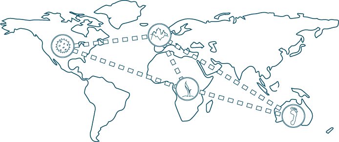

We are a membership-based organization, originally launched in April 2013 with ten founding members: three nations and seven institutions.
Community
SciColl Member Organizations

-
Nations:
- Australia
- Belgium
- United States of America: Several agencies and organizations participate from the USA, including the U.S. Health and Human Services, the U.S. Department of Agriculture, the U.S. National Parks Service, and the Smithsonian Institution.
-
Institutions:
- Fundação Oswaldo Cruz (Fiocruz), Brazil
- Museum national d’Histoire naturelle, France
- Museum für Naturkunde, Germany
- Korea National Research Resource Center, Republic of Korea
- Natural History Museum, United Kingdom
- Naturalis Biodiversity Center, The Netherlands
- Museo Nacional de Ciencias Naturales, Spain
#didyouknow...
Living collections –such as botanical gardens, zoos, aquaria, culture collections– are considered scientific collections
...?
GRSciColl Community

SciColl's most important contribution to interdisciplinary research was the creation of the Global Registry of Scientific Collections (GRSciColl). It is an online portal through which researchers can search for and find information about collections across all disciplines.
GRSciColl merged with the Global Biodiversity Information Facility (GBIF) in 2019 where researchers who work with collections and data can add and update information about collections. The registry has two goals:
- To improve access to information about scientific collections and the institutions that support them, and
- To improve interoperability among collections and digital data by providing unique codes and machine-readable identifiers for institutions and collections.
As part of GBIF's global community, GRSciColl integrates with a number of other registries, sample and specimen locators, and unique identifier generators to ensure all scientific collections are uniquely identifiable and traceable as they are queried, researched, and published.
Public Engagement: Scientists and Beyond
Through SciColl's social media outlets we engaged a broader and more diverse community than possible through our other initiatives. We harnessed the power of numbers through our Twitter account, connecting with all types of individuals and organizations from research and citizen scientists to professional societies and other scientific organizations.
Our blog, Collections in the News, offered a platform where we shared more detailed information about how collections are utilized in current research. We highlighted new and exciting findings and methods, profile researchers and collections, and pique readers’ interest with intriguing images.